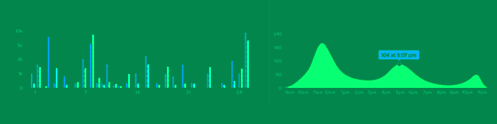
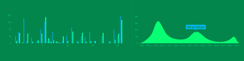

卫仕能源（VIS ENERGY）注定专注于能源T领域，既能为电力用户（居民、工商业等）提供的智慧化能源消费管理技术解决方案，又可以向电网企业提供基于大数据和云计算的输配电智能化管控的技术解决方案，拥有业内一流的安全性和有效性。
以积累的大量用户用电信息数据为基础，融合天气、经济、社会等多维度数据源，构建用户用电信息大数据云平台，采用国际先进的人工智能技术、行为分析技术和高频数据处理技术，对用户用电行为特征进行精准的定量分析，挖掘出用电行为折射出的地区（国家）经济发展趋势、居民购买力、市场消费潜力等价值信息，供相关产业主管部门、行业企业和机构实现价值增值服务。
 

融合智能电网中的高级计量体系(AMI)与大数据云技术, 利用智能电能表实时采集、分析和挖掘用户用电状态，依据实时电价、天气气候等多维数据，将清洁能源开发、资源综合利用与节能减排、能源(电力)需求侧管理、能效经济、绿色配额交易融为一体，实现电力系统的多维度整合优化，为用户提供智能用电决策方案，提高用户节能节电意识，提升电能产消匹配度与整体效能，实现需求侧的智能响应与优化管理。
针对电力业务数据专业化分析技术应用的发展趋势,专注开发应用于智能配网、分布式能源系统的基础软件，即主要用于解决智能电网和分布式能源环境下数据传输、数据访问、应用调度、系统构建和系统集成、流程管理等问题的电力大数据中间件，是支撑电力大数据应用开发、运行和集成的平台，位于能源应用与操作系统、数据库之间，帮助电力大数据用户开发和集成应用软件，实现应用之间的互操作。
公司研发中心：武汉市 珞瑜路727号 光谷银座2408号
公司运营中心：北京市 回龙观北农路2号 华北电力大学科技园 主楼D座15楼东区7号
版权所有2015 VIS Energy Corporation.保留一切权利 ｜ 服务条款 ｜ 隐私条款 ｜ 京ICP证备14050733号京公安网备14050733号